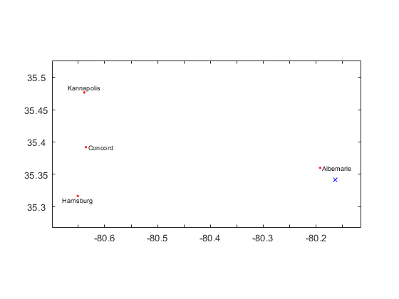

HW 3 Solution - ISE 754 Fall 2019
Contents
Question 1
(see Basic Concepts)
Question 2
(a)
[Name,ST,P,w] = ... uscity10k('Name','ST','XY','Pop',mor({'NC','SC'},uscity10k('ST'))); opt = optimset('fminsearch'); opt.MaxFunEvals = 1e8; opt.TolFun = 1e-8; % Two ways to calc minisum location: xy = fminsearch(@(x) sum(w(:)'.*dists(x,P,'mi')),mean(P,1),opt) xy = minisumloc(P,w(:)','mi') % Matlog function
xy = -80.1632 35.3415 xy = -80.1632 35.3415
(b)
Two ways to determine closest city:
d = dists(xy,P,'mi'); Name(argmin(d)) lonlat2city(xy,uscity10k) % Matlog function (default data USCITY50K)
ans =
1×1 cell array
{'Albemarle'}
xy is in Albemarle, NC
(c)
Name(argmax(d))
ans =
1×1 cell array
{'Elizabeth City'}
(d)
idx = argsort(d); Name(idx(1:4))
ans =
4×1 cell array
{'Albemarle' }
{'Concord' }
{'Harrisburg'}
{'Kannapolis'}
(e)
makemap([xy; P(idx(1:4),:)]) pplot(xy,'bx') pplot(P(idx(1:4),:),'r.') pplot(P(idx(1:4),:),Name(idx(1:4)))
(f)
disp(['The location is ' num2str(dists(xy,P(argmax(w),:),'mi')) ... ' miles from the largest city, which is ' Name{argmax(w)} '.'])
The location is 38.7259 miles from the largest city, which is Charlotte.
(g)
idx50k = idx(w(idx) >= 50000); Name(idx50k(1))
ans =
1×1 cell array
{'Concord'}
(h)
100*sum(w(P(:,2) < xy(2)))/sum(w)
ans = 52.2926
(i)
sum(w(d <= 100))
ans =
3900370
(j)
makemap([xy; P(idx50k(1:5),:)]) pplot(xy,'bx') pplot(P(idx50k(1:5),:),'r.') pplot(P(idx50k(1:5),:),Name(idx50k(1:5)))

(k)
idxDC = mand({'cary','char','north char'},Name,{'NC','NC','SC'},ST)
D = dists(P(idxDC,:),P,'mi');
W = sparse(argmin(D,1),1:length(w),w);
totalPop = full(sum(W,2))
idxDC =
10
12
117
totalPop =
2483848
2537377
702737
Question 3
(a)
city2lonlat = @(city,st) ... uscity('XY',mand(city,uscity('Name'),st,uscity('ST'))); P = city2lonlat({'Detroit','Gainesville','Memphis'},{'MI','FL','TN'}) f = [48 28 32]; xy = minisumloc(P,f,'mi')
P = -83.1022 42.3830 -82.3459 29.6788 -89.9785 35.1035 xy = -85.5064 37.7522
(b)
lonlat2city(xy)
xy is 30.66 mi S of Louisville/Jefferson County metro government, KY
(c)
lonlat2city(xy,uscity10k)
xy is 5.55 mi SW of Bardstown, KY
(d)
D = dists(P,P,'mi'); g = mean([1057/D(1,2) 754/D(1,3) 719/D(2,3)]) % Using fastest rte per Gmap
g =
1.2165
(e)
r = 2.00;
TCopt = sum(f.*dists(xy,P,'mi')) * g * r
TCopt = 1.0410e+05
(f)
xyCary = city2lonlat('Cary','NC'); TCcary = sum(f.*dists(xyCary,P,'mi')) * g * r; increase = TCcary - TCopt; vdisp('TCopt,TCcary,TCcary - TCopt')
: TCopt TCcary TCcary - TCopt -:---------------------------------------- 1: 104,103.87 140,499.16 36,395.29